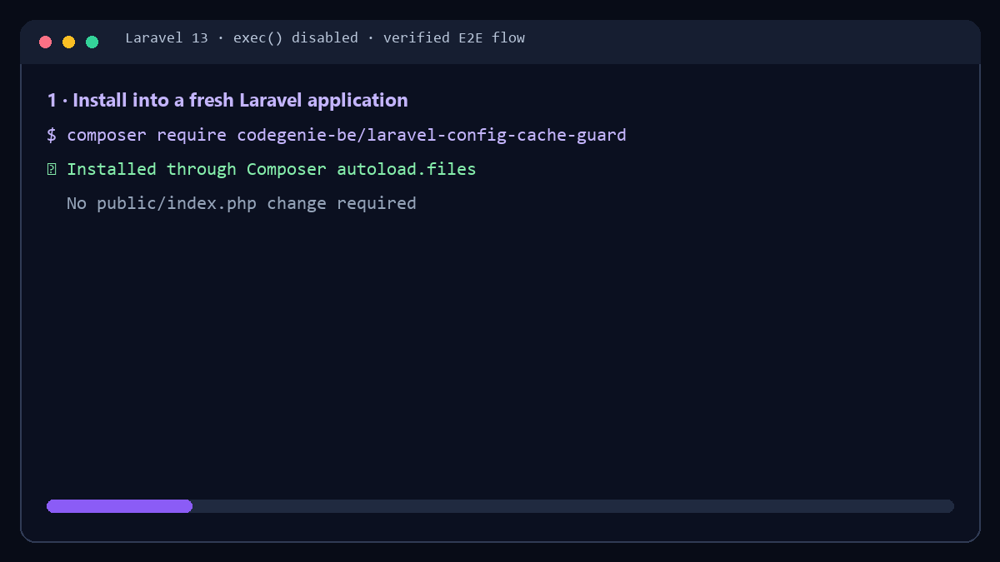

v1.5.0 · Laravel 12–13 · PHP 8.2–8.5 · MIT
Never serve stale Laravel config or routes after a deployment.
Detect relevant source or runtime-path changes before Laravel boots, reject stale deployment cache and repair safely — even on FTP or shared hosting where exec() is disabled.
composer require codegenie-be/laravel-config-cache-guard
That single Composer command completes installation. Optionally verify it with php artisan config-cache-guard:status. No change to public/index.php is required.
Verified behavior
Real Laravel 12 and 13 coverage
The full E2E suite installs the release artifact into fresh Laravel applications, builds real deployment caches and verifies CLI and process-control-disabled repair over HTTP. Cross-platform smoke tests additionally validate the pre-bootstrap repair path on Windows, macOS ARM64, Linux ARM64 and Alpine.

Before Laravel boots
How it works
- DetectComposer loads the guard before
bootstrap/app.php. It compares source signatures and a one-way runtime identity for config cache. - RejectChanged sources or a relocated config runtime make stale config cache unavailable; stale routes move to a current signature-based path.
- RepairUse PHP CLI when available, or queue internal
Artisan::call()repair after the response. - ContinueThe request never needs to consume known-stale config or routes. Later requests use rebuilt cache.
The runtime identity stores hashes derived from the application path and OS family, not raw server filesystem paths.
Supported runtimes
Compatibility
| Laravel | PHP | Status |
|---|---|---|
| 12 | 8.2–8.5 | Supported |
| 13 | 8.3–8.5 | Supported |
A date-aware CI policy rejects PHP or Laravel versions after they reach end of life.
Security and privacy
- Does not store
.envvalues - Does not store raw runtime paths in signatures
- Does not send telemetry or external requests
- Uses file locks and safe diagnostic markers
- Exposes no public repair endpoint
- Invokes fixed process arguments without a shell
Common questions
FAQ
Does this make every Laravel website faster?
No. The package protects deployment cache correctness. It preserves or rebuilds cache already used by the application, but it does not automatically optimize every website.
Does it automatically enable config or route cache?
No. Missing config cache creation is opt-in through CONFIG_CACHE_GUARD_CREATE_CONFIG_CACHE=true. Route guarding starts when route cache already exists.
What happens if config cache was built on another machine or application path?
The config signature is bound to the current runtime identity. A signed cache relocated from another runtime path is rejected before Laravel loads it and the existing repair flow rebuilds it for the destination.
What happens when external process control is disabled?
Stale config is removed, stale routes are bypassed, a safe pending marker is written and Laravel rebuilds internally through Artisan::call() after the response.
Should deployment scripts still run config:cache?
When destination commands are available, yes: they remain the preferred production flow. On FTP-only/shared hosting without SSH or deploy hooks, the package's in-app fallback is explicitly supported instead.
Add a safety net with one Composer command.
composer require codegenie-be/laravel-config-cache-guard